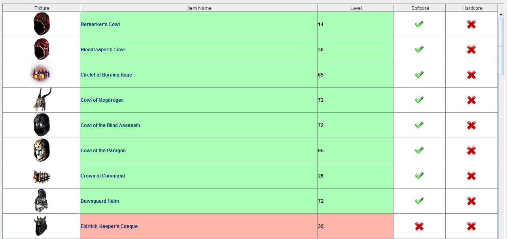
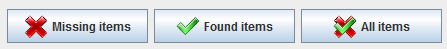

The 'Collection' page can be used to get an overview of the items available in Grim Dawn and which ones you have already
collected in GD Stash.
On the left side of the page, the items to show can be selected. On the right side, all items meeting the selection criteria
are being displayed. For each item it is listed whether it is part of your GD Stash collection already. This overview
distinguishes between softcore and hardcore items.

You can choose to show all items, only the ones you already have or only the ones you are still missing. For the purpose
of this selection, an item has been found if you either have a softcore or hardcore version of it in your collection.
